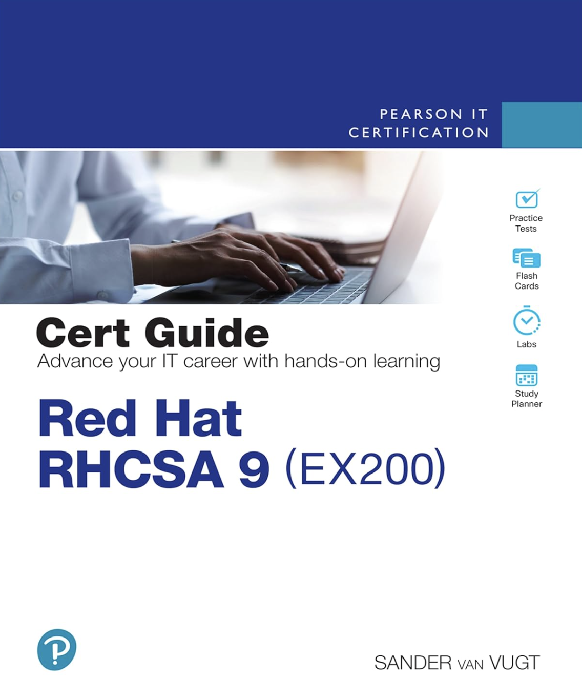

Choosing RHCSA as My Next Certification
Published on in Certifications

Once I decided to focus on Linux administration, the next question was how to prove it — to myself first, and to employers second. I chose the Red Hat Certified System Administrator (RHCSA).
Why a Red Hat certification
Red Hat Enterprise Linux runs an enormous share of enterprise and cloud infrastructure, so the skills transfer directly to the environments I want to work in. The RHCSA also has a reputation that matters: it is entirely hands-on. There are no multiple-choice questions — you sit at a real system (exam code EX200) and either complete the tasks or you don't.
What it covers
The exam works through the daily reality of administering a RHEL 9 system: managing users and permissions, configuring storage and filesystems, controlling services with systemd, working with SELinux, handling networking, and writing basic automation. It is broad, but it is exactly the foundation a sysadmin needs.
How I'm studying
My method is deliberately repetitive:
- Read a chapter from a solid RHCSA 9 study book.
- Watch the matching section of a video course to see it demonstrated.
- Reproduce the whole thing from memory on a fresh virtual machine.
If I can't rebuild it from a blank prompt without notes, I don't actually know it yet.
That last step is the one that counts. Reading about a command is easy; configuring a service under exam pressure is a different skill, and the only way to build it is reps. Which is exactly why I needed a proper lab — the subject of the next post.